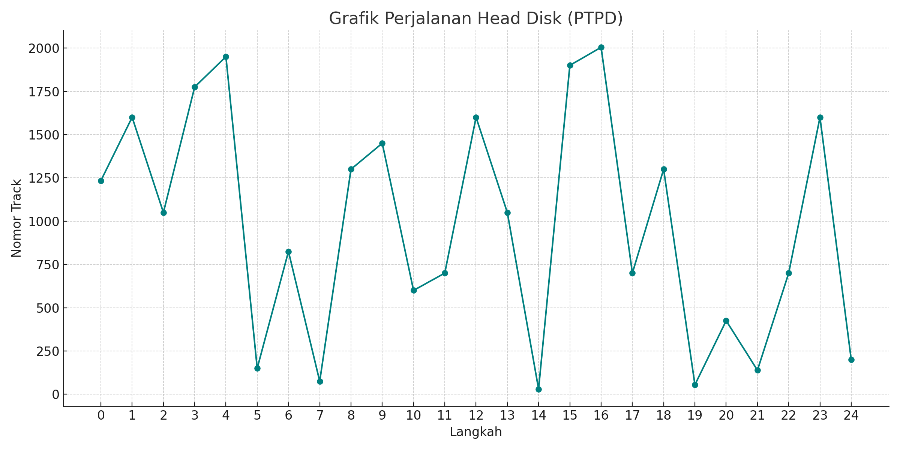

Data:
- Jumlah track: 2000
- Posisi awal head: 1234
- Urutan akses track: 1600, 1050, 1775, 1950, 150, 825, 75, 1300, 1450, 600, 700, 1600, 1050, 30, 1900, 2004, 700, 1300, 55, 425, 139, 700, 1600, 200
Contoh Perhitungan Algoritma PTPD
| Langkah | Track | Jarak |
|---|---|---|
| 1 | 1600 | 366 |
| 2 | 1050 | 550 |
Grafik Perjalanan
Penjelasan
Algoritma PTPD (FCFS) memproses permintaan berdasarkan urutan kedatangan. Ini sederhana tapi tidak efisien karena